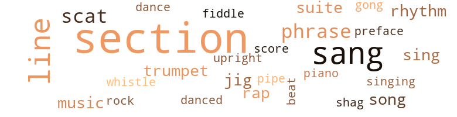
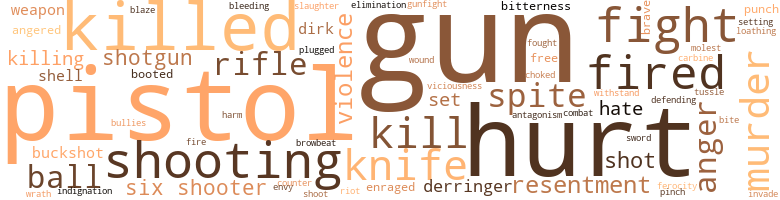

Defender of the Angels: A Black Policeman in Old Los Angeles, by Kimbrough, Jess (1969)
76 music-related terms matched in this text.
Most frequent terms in this topic: section (21); sang (10); line (8); scat (3); music (2)
cornet.n.01
Definition: a brass musical instrument with a brilliant tone; has a narrow tube and a flared bell and is played by means of valves
| word | sentence |
|---|---|
| trumpet | " He sure is , and it 'll take more than Joshua 's trumpet to knock down the walls around him . " |
| trumpet | Three days after I received the notice the color walls came tumbling down without a blast from a single trumpet . |
dance.n.01
Definition: an artistic form of nonverbal communication
| word | sentence |
|---|---|
| dance | If escorting the same unmarried woman to a dance , or a picture show , or to a beach picnic could be construed as conduct unbecoming an officer , my superiors would have taken action a decade past , and I would have been fired . |
dance.v.03
Definition: skip, leap, or move up and down or sideways
| word | sentence |
|---|---|
| danced | I danced with all the women . " |
foreword.n.01
Definition: a short introductory essay preceding the text of a book
| word | sentence |
|---|---|
| preface | " I do n't suppose I would , " he said flatly , throwing me a blank grin , which was a misleading preface to what followed . |
gong.n.01
Definition: a percussion instrument consisting of a metal plate that is struck with a softheaded drumstick
| word | sentence |
|---|---|
| gong | A big brass gong set in the door on the driver 's left clanged a warning to other vehicles for the right-of-way . |
jig.n.01
Definition: music in three-four time for dancing a jig
| word | sentence |
|---|---|
| jig | After all they do n't expect wonders from a jig detective . " |
| jigs | It 's like the old jigs say , ' Keep on hopin ' and prayin ' and something will come your way . ' |
music.n.01
Definition: an artistic form of auditory communication incorporating instrumental or vocal tones in a structured and continuous manner
| word | sentence |
|---|---|
| music | Jeff 's first calling was music , and he had traveled as a member of the band in a minstrel show . |
| music | Somewhere to the front , in the cluster of shade trees , there is the muted tone of rock and roll music . |
phrase.n.02
Definition: a short musical passage
| word | sentence |
|---|---|
| phrase | Jeff always took special pains to enunciate the king 's English , but there were times when a phrase of Negro vernacular slipped out into the open . |
| phrase | What had come about to change the general routine of an idle phrase now and then ? |
| phrases | I was no longer among those who did n't parade under false colors or evade reality with high-sounding phrases . |
piano.n.01
Definition: a keyboard instrument that is played by depressing keys that cause hammers to strike tuned strings and produce sounds
| word | sentence |
|---|---|
| piano | Jammed tight in a small smoke-filled room , heavy with rank underarm odor , we walked the dog to the slow rhythm of the blues beat out on an untuned piano . |
pipe.n.04
Definition: a tubular wind instrument
| word | sentence |
|---|---|
| pipe | The hole in the barrel becomes as big as a black gas pipe plugged at the back end . |
rap.n.05
Definition: genre of African-American music of the 1980s and 1990s in which rhyming lyrics are chanted to a musical accompaniment; several forms of rap have emerged
| word | sentence |
|---|---|
| raps | Around ten o'clock there were three distinct raps on the front door . |
| rap | " Chief , I reckon you know this rap I 'm charged with was supposed to be chilled . |
rhythm.n.01
Definition: the basic rhythmic unit in a piece of music
| word | sentence |
|---|---|
| beat | In my beat walking days he worked Main Street from First to Fifth on the night watch . " |
rhythm.n.04
Definition: the arrangement of spoken words alternating stressed and unstressed elements
| word | sentence |
|---|---|
| rhythm | Jammed tight in a small smoke-filled room , heavy with rank underarm odor , we walked the dog to the slow rhythm of the blues beat out on an untuned piano . |
| rhythm | Instinctively my eyes search the crowd , but there is no reaction to the rhythm . |
rock_'n'_roll.n.01
Definition: a genre of popular music originating in the 1950s; a blend of black rhythm-and-blues with white country-and-western
| word | sentence |
|---|---|
| rock | Somewhere to the front , in the cluster of shade trees , there is the muted tone of rock and roll music . |
scat.n.01
Definition: singing jazz; the singer substitutes nonsense syllables for the words of the song and tries to sound like a musical instrument
| word | sentence |
|---|---|
| scat | Sande climbed on the rear scat grumbling , and Rawls sat beside me on the front seat . |
| scat | Sande climbed on the rear scat grumbling , and Rawls sat beside me on the front scat . |
| scat | Sande climbed on the rear scat grumbling , and Rawls sat beside me on the front scat . |
score.n.02
Definition: a written form of a musical composition; parts for different instruments appear on separate staves on large pages
| word | sentence |
|---|---|
| score | Nature played me short on this score , and I am always a little weak after moments of intense excitement . |
section.n.01
Definition: a self-contained part of a larger composition (written or musical)
| word | sentence |
|---|---|
| section | Sitting in the open section of the streetcar that rumbled over to the South Side , I was engrossed in one thought . |
| section | His act was so rare that the big white men in that section , who could not wholly discount manly courage even under a black skin , preserved the inviolable white tradition by agreeing openly that Cedar Brook was a " crazy nigger , " who really did not know any better ; and because of this , was not morally responsible for killing a white man . |
| section | In the parlance of the section around East Ninth Street , I was a skinner who could crack the narrow end of a bridle line on a mule 's ass , and make him squat low in the collar and pull like hell . |
| section | Riding through a section outside the city limits made sitting alone on a deserted street , with no idea whatsoever why I was there , a different matter than it would have been within the city borders . |
| section | How could anything of real value be found in this peculiar little house in a section where only poor Mexicans lived . |
| section | He read the card slowly and then very carefully pushed it in a section of the billfold he had pulled from the hip pocket of his breeches . |
| section | The peckerwoods in that section take it for granted that I 'm a Portuguese , and I ought to do right well boot-leggin ' jackass on the side . |
| section | For three nights in succession a black man held up a gas station somewhere in the sparsely populated white section south and west of the Negro district . |
| section | Since the robberies occurred in a white section outside the Negro district , a team of white detectives was assigned to the case . |
| section | Had it been after midnight , when the streets in that section are deserted , I am sure there would have been some communication between us . |
| section | The first happening occurred as I sat beside my grandmother Anna Bell in the filthy four-seat Negro section on a westbound railroad train , rumbling across the flat plains of west Texas . |
| section | In ten minutes we crossed the railroad tracks into the Negro section . |
| section | While I gazed , fascinated by the spectacle , a white man entered our section carrying a repeating rifle in his hand . |
| section | Immediately , the acrid smoke from the black powder cartridges whipped back into the section and made breathing difficult . |
| section | I was about to write off the performance with the threadbare platitude : " Life in the Negro section : Where little is known , little is to be expected . " |
| section | Then a satisfied grin came over the man 's face , and he walked out of the section slamming the partition door behind him . |
| section | To do an honest survey , I want a cross section of races which must include colored prisoners . " |
| section | The experts on human behavior , who have been so hard put lately , groping awkardly for the cause that underlies the nationwide violence , have solemnly warned me that crime on the streets in the Negro section will explode in midsummer , and their prediction is probably correct . |
| section | It is amazing that white men of knowledge have but recently caught a glimpse of the ugliness in the black section and the hopelessness of the black people who exist there . |
| section | It was his privilege , not only to shoot at jackrabbits from an open window in the " nigger section , " but also to spit where he chose . |
| section | " I 've spent most of my life in this section . " |
shag.v.01
Definition: dance the shag
| word | sentence |
|---|---|
| shag | " Get further whore , and if you ever shag yo ' ass up them front steps ag ' in , be damned sure you got the paper from the clinic in yo ' hand . |
sing.v.02
Definition: produce tones with the voice
| word | sentence |
|---|---|
| sang | " Strip down as clean as a mess of chitterlings on a plate , baby , so it 'll be just live meat feelin ' live meat , " she sang out and stepped into the bathroom . |
| sing | It 's like a song they used to sing . |
| sing | In a low moaning voice , she began to sing : Sally whimpered low , and I joined in . |
| sang | " Sunset and New High , " Burns sang out to the driver as we climbed in the fast wagon parked at the curb . |
| singing | " I 've done better , but I 'm not singing the blues , " she said calmly . |
| sang | " You 'd better not highball the engineer till I get a hand hold on the steps , " she sang out , hurrying in to join us . |
| sang | " Kiss my ass grease-ball and see ai n't it steady like the rock of ages , " she sang out , sniffing noisily through the holes between her cheek bones . |
| sang | " Come in , " he sang out . |
| sang | " Do n't bust yo ' knucks on them rough boards . . . I 's comin ' , " a woman sang out . |
| sang | " At this very moment , you do n't , " Sande sang out , and pulling a double-barreled derringer pistol from his inside coat pocket , handed it to me across the back of the seat . |
| sang | " Sure it 's me , babe , " she sang out . |
| sang | " It 's on the way , " she sang out . |
| sang | " I 'm sure glad you made the grade , Strite , " the white bartender sang out , ignoring Blakeley . |
song.n.01
Definition: a short musical composition with words
| word | sentence |
|---|---|
| song | It 's like a song they used to sing . |
| song | They could raise the roof off a hay barn when they thundered their rallying song . |
suite.n.01
Definition: a musical composition of several movements only loosely connected
| word | sentence |
|---|---|
| suites | " He surely misses the swank office suites and the clever evasiveness of con men skilled in engineering a big money deal that on the surface appears to be a legitimate business transaction . |
| suite | The rendezvous was in fact a suite of rooms in the Hayward Hotel where key-carrying white detectives and newspaper reporters spent their idle time . |
tune.n.01
Definition: a succession of notes forming a distinctive sequence
| word | sentence |
|---|---|
| line | " What 's his line ? " |
| lines | On the book shelf to the right of the table where I am writing these lines , there is a copy of what some literary critics have claimed is Jack London 's best novel : Martin Eden . |
| line | What we need most is a good description of this bandit , and I think you can help us along this line . " |
| line | That 's more in your line . |
| line | " Did n't you smell a rat that something was out of line ? " |
| line | These thugs figure on whippin ' you in line , and that 's when I blow my stack . |
| line | " Did you ever herd a pit gang and keep 'em in line ? " |
| line | The thought troubles me , but I put it aside and follow another line . |
| line | " A man 's got the right to keep his woman in line , ai n't he , Officer ? |
upright.n.02
Definition: a piano with a vertical sounding board
| word | sentence |
|---|---|
| upright | But few will deny that it is easier to move quickly from a straight chair than it is to struggle upright from the soft cushions of a wide settee . |
violin.n.01
Definition: bowed stringed instrument that is the highest member of the violin family; this instrument has four strings and a hollow body and an unfretted fingerboard and is played with a bow
| word | sentence |
|---|---|
| fiddle | " It 's tough to play second fiddle , but there ai n't much you can do about it . |
whistle.v.01
Definition: make whistling sounds
| word | sentence |
|---|---|
| whistle | You just whistle Alabama Bound till I do my time , " she taunted . |
301 violence-related terms matched in this text.
Most frequent terms in this topic: gun (34); pistol (26); hurt (25); killed (17); shooting (13)
abhorrence.n.01
Definition: hate coupled with disgust
| word | sentence |
|---|---|
| loathing | I looked up at the white man , and the loathing I felt toward him caused a tremor in my belly . |
anger.n.01
Definition: a strong emotion; a feeling that is oriented toward some real or supposed grievance
| word | sentence |
|---|---|
| anger | " So you gon na lock me up . . . " Nat said in a tone that did not express anger or regret . |
| anger | An inward anger showed on his face as he gripped the steering wheel viciously . |
| anger | At least his anger had not flared . |
| anger | I have seen terrible fear , dangerous anger , depressing remorse , and heartfelt sorrow portrayed in a man 's eyes ; but seldom have I seen a hurt deep as a chasm . |
| anger | I asked , smothering the anger that I could not afford to let become evident . |
| anger | I wanted to vent my anger and scream out , but a sharp look from my grandmother checked me . |
| anger | There was no marked anger in his voice , only a sort of veiled condescension . |
anger.v.02
Definition: become angry
| word | sentence |
|---|---|
| angered | There must have been an argument of some sort that angered you , " I insisted , hoping to draw him out . |
| angered | He wo n't be angered by my persistence . |
bird_shot.n.01
Definition: small lead shot for shotgun shells
| word | sentence |
|---|---|
| buckshot | " I been looking at you ever since you pulled in buckshot range . " |
| buckshot | If he 's the least suspicious looking , I 'll have my shotgun in my hand , and if he makes a false move , I 'll blow his ass to hell with buckshot . |
| buckshot | I ask , looking at the two sawed-off pump guns clamped to the dashboard , and thinking about the hole one twelve-gauge shell loaded with buckshot would make in a black belly . |
blast.v.03
Definition: use explosives on
| word | sentence |
|---|---|
| shell | " Do n't worry , I 'll never shell out a buck and a half for a drink of grain alcohol . " |
| shell | " Then somebody behind a big desk ought to shell out a few dimes for a sure tip on this joker we 've got to find . " |
| shell | " Sure , he 'll drop the shuck , and I 'll have to shell out a hundred hard dollars every Monday mornin ' like the rest of the housewomen . " |
blaze_away.v.02
Definition: shoot rapidly and repeatedly
| word | sentence |
|---|---|
| blaze | When did he blaze away ? |
bleeding.n.01
Definition: the flow of blood from a ruptured blood vessel
| word | sentence |
|---|---|
| bleeding | Some were lucky and found a rich vein of the precious metal , but the majority came out empty-handed and with their gums soft and bleeding from scurvy . |
boot.v.01
Definition: kick; give a boot to
| word | sentence |
|---|---|
| booted | Quite often I ran across a picture of these booted miners in that far-off land of trees and rushing streams , but they did not interest me greatly . |
| booted | The Negro I had booted out of the cafe was nowhere in sight . |
brawl.n.02
Definition: a noisy fight in a crowd
| word | sentence |
|---|---|
| free-for-all | In the old days there were such things as free-for-all barroom fights . |
| free-for-all | Them paddy laws swarmed in with piss-elm clubs and women was yellin ' like whores in a free-for-all . |
carbine.n.01
Definition: light automatic rifle
| word | sentence |
|---|---|
| carbine | With an almost morbid interest I pored over the pictures of Negro volunteer soldiers standing proudly in campaign hats , blue wool shirts , and trousers , holding a short-barreled carbine at the order . |
counterpunch.n.01
Definition: a return punch (especially by a boxer)
| word | sentence |
|---|---|
| counter | Nollie , the owner , leaned forward lazily , unmindful that a roll of flesh from his enormous belly spilled over the serving counter . |
defy.v.01
Definition: resist or confront with resistance
| word | sentence |
|---|---|
| withstand | It was not only a matter of the peace officer exerting force , but also of his being able to withstand an equal force exerted by an offender . |
derringer.n.01
Definition: a pocket pistol of large caliber with a short barrel
| word | sentence |
|---|---|
| derringer | " At this very moment , you do n't , " Sande sang out , and pulling a double-barreled derringer pistol from his inside coat pocket , handed it to me across the back of the seat . |
| derringer | Now to have him pull the derringer from his pocket shocked me . |
| derringer | Once his eyes dropped to my coat pocket , where I had placed the derringer , and then shifted to some object in the distance . |
| derringer | " It happens very seldom , Major Sande , " I admitted and , taking the derringer from my coat pocket , handed it to him . |
dirk.n.01
Definition: a relatively long dagger with a straight blade
| word | sentence |
|---|---|
| dirk | She reached inside the loose blouse and pulled out a short pearl-handled dirk and handed it to Blakeley . |
| dirk | Blakeley closed the door , and fingered the dirk , grinning . |
| dirk | Blakeley grinned and handed her the dirk . |
elimination.n.05
Definition: the murder of a competitor
| word | sentence |
|---|---|
| elimination | I 've heard you mention the power of deduction and the process of elimination . |
enrage.v.01
Definition: put into a rage; make violently angry
| word | sentence |
|---|---|
| enraged | It is generally conceded that O'Bannon was the most popular detective in the bureau , and having his life snuffed out by a worthless Mexican dope peddler enraged even the governing city fathers . |
| enraged | " To keep my cabinet well stocked with provisions requires the attitude that enraged you when we met on Central Avenue . |
envy.n.01
Definition: a feeling of grudging admiration and desire to have something that is possessed by another
| word | sentence |
|---|---|
| envy | In truth , he was an authority on the procedure , much to the whispered envy of some white detectives who were forced to ask him certain points of law . |
ferociousness.n.01
Definition: the trait of extreme cruelty
| word | sentence |
|---|---|
| viciousness | Crimes are committed with a blunt viciousness without much afterthought . " |
ferocity.n.01
Definition: the property of being wild or turbulent
| word | sentence |
|---|---|
| ferocity | With uncanny speed and ferocity her arms encircled me , and she kissed me full on the mouth . |
fight.n.02
Definition: the act of fighting; any contest or struggle
| word | sentence |
|---|---|
| combat | " Were you in combat ? " |
fight.n.05
Definition: a boxing or wrestling match
| word | sentence |
|---|---|
| fight | Wading into the fight I knocked one of the culprits cold and , grappling with the other , choked him into submission . |
| fight | When directed to me , it 's grounds for a fight . |
| fight | No furniture was disarranged , which indicated there had not been a violent fight . |
| fight | " There could be a fight . " |
| fights | In the old days there were such things as free-for-all barroom fights . |
| fight | But if I killed a white man even in a fight , they 'd chop me down and throw me on the brush heap . " |
| fight | We have n't had a fight . " |
| fight | Half turning in my seat , I said to Sande , " What was this near fight all about ? " |
| fight | " Knowing you do n't back away from a fight , I do n't like to think about it . " |
fight.v.02
Definition: fight against or resist strongly
| word | sentence |
|---|---|
| defending | " I hope you 're not blaming me , Strite . . . " " Hell no , I do n't expect you to risk your future defending burr-heads . " |
| fight | Do n't kid yourself into believing you can fight him alone and win . " |
| fight | You 've got to fight and forget the rules . |
| fight | The chief of detec - tives had told me frankly I could not fight Blaine and win . |
| fought | A war in defense of the principles of freedom , so I was told , was being fought in Cuba , a scant hundred miles south of the Florida coast . |
gag.v.06
Definition: cause to retch or choke
| word | sentence |
|---|---|
| choked | Wading into the fight I knocked one of the culprits cold and , grappling with the other , choked him into submission . |
gun.n.01
Definition: a weapon that discharges a missile at high velocity (especially from a metal tube or barrel)
| word | sentence |
|---|---|
| gun | Faced with the certainty of being drafted , I jumped the gun and was the second man in the police department to enlist in the Army . |
| gun | A badge and a gun never made the wearer a man . |
| gun | To the best of my knowledge Celia does n't own a gun , and be damned sure yours is unloaded before you crawl in bed . |
| gun | " Can I put my gun and handcuffs on the shelf ? " |
| gun | " The gun you want is upstairs in the rooming house , " the man yelled , edging closer to the power pole . |
| gun | That bastard upstairs has a gun , and he 's killed a woman , " Burns warned as we moved toward the entrance . |
| gun | I was certain Leonard was waiting at the bottom of the stairs with his gun in his hand . |
| gun | But instead of the killer stopping dead in his tracks with Leonard 's gun in his belly , he darted out through the door and across the sidewalk . |
| gun | " Put that gun away , " I yelled back . |
| gun | I saw him make a bad man with a gun take low one night . " |
| gun | I know damn well he 's got a gun , and we do n't know how he feels about the charge . |
| gun | If the three of us close in on him , he might use his gun . " |
| gun | " Are you wearin ' a badge and carryin ' a gun to show the peckerwoods that you 're an upstandin ' African ? " |
| guns | " And if you was a thief , like most of the badge-wearin ' bullies I 've met head-on from time to time , guns woulda blazed on Ma Posey 's front gallery . " |
| gun | " Has he pointed the gun at you and threatened to shoot ? " |
| gun | " A loaded gun is n't exactly a play toy , " I said , breaking Nat 's revolver and removing the cartridges . |
| gun | " I thought I was a hell of a woman , but when you pulled yo ' gun and went through that bedroom door , I was so damned scared I pissed all over myse ' f. Look at these soppin ' wet shoes . " |
| gun | Now put this gun away . |
| gun | " Take my gun and watch this bastard while I go across the street and telephone my partner , " I said , reaching inside my coat . |
| gun | " In other words you think he was carrying a gun . " |
| gun | " He carries a gun , and we 're in a position to believe he 'll use it if he 's cornered , I do n't want this Nigra dead . |
| gun | " A man with a gun is always dangerous . |
| gun | How do I know you 'll back me up should there be a gun battle when we make this arrest ? " |
| gun | " Have you got a flashlight and extra cartridges for your gun ? " |
| gun | " No flashlight and no extra cartridges , " he grinned , " and not much of a gun either , when you compare it to the type you boys carry . " |
| gun | There 's nothing like a dependable gun when you 're moving in on a holdup man , " he said and , pulling a small .32 caliber revolver from his coat pocket , handed it to me . |
| gun | " By God , Strife , this is a real six-shooter , " he commented , buckling the belt about his waist and adjusting the holstered gun in position . |
| gun | He stood in the doorway with his gun in his right hand . |
| gun | I 'm in over my head without a gun to make it worse . " |
| gun | " Where 's the gun , Holland ? " |
| gun | Being an eccentric old man , I suspected there might be a gun in Sande 's grip now on the car floor at my feet . |
| gun | " Would n't you be scared facing my gun , knowing I would shoot ? " |
| gun | " That 's it - you 're a wooden duck floatin ' quiet and easy on the pond , and Blaine 's hid in the blind with his gun in his hand . " |
| gun | He likes to shoot ; you might say he 's gun happy . |
| guns | I ask , looking at the two sawed-off pump guns clamped to the dashboard , and thinking about the hole one twelve-gauge shell loaded with buckshot would make in a black belly . |
| guns | It is only that better guns are in the hands of more literate policemen who have been schooled in the infallible letter of the law . |
| gun | Skittish as these paddies is of late , one of 'em s gon na bust a cap and cut a Mose in half , then swear the gun went off accidental . " |
gunfight.n.01
Definition: a fight involving shooting small arms with the intent to kill or frighten
| word | sentence |
|---|---|
| gunfight | It had also been guardedly whispered that somewhere in the same territory he had killed a white man in a gunfight . |
hassle.n.02
Definition: disorderly fighting
| word | sentence |
|---|---|
| tussle | I got my hand on it , and , in the tussle , it went off . |
hate.n.01
Definition: the emotion of intense dislike; a feeling of dislike so strong that it demands action
| word | sentence |
|---|---|
| hate | There is no hate , nor is there any fear in his eyes , only the inscrutable desperation . |
hate.v.01
Definition: dislike intensely; feel antipathy or aversion towards
| word | sentence |
|---|---|
| hates | As a rule , this white man hates everything else black in creation , even black cats and dogs . |
| hate | " Because you 're not a gringo , and there is not hate in your heart toward my people . " |
| hate | All he can do is hate you . " |
hostility.n.02
Definition: a state of deep-seated ill-will
| word | sentence |
|---|---|
| antagonism | I have met such stares so often they no longer arouse any antagonism . |
hurt.v.04
Definition: cause damage or affect negatively
| word | sentence |
|---|---|
| hurt | " African , did it ever strike you that somebody could have been hurt bad ? " he asked . |
| hurt | Nobody is hurt . " |
| hurt | " According to the experts who write books on how people like to be hurt before they get a piece , she would n't have changed a bit . " |
| hurt | I do n't want you to be hurt . " |
indignation.n.01
Definition: a feeling of righteous anger
| word | sentence |
|---|---|
| indignation | It was indeed timely , and when the story appeared in the daily papers , public indignation was appeased to a great extent , and the pressure on the department eased considerably . |
injury.n.01
Definition: any physical damage to the body caused by violence or accident or fracture etc.
| word | sentence |
|---|---|
| hurt | " No , he just looked at me , and I could see the hurt in his eyes . |
| hurt | " I 'm bad hurt , ai n't I , Strite ? " she asked calmly . |
| hurt | I have seen terrible fear , dangerous anger , depressing remorse , and heartfelt sorrow portrayed in a man 's eyes ; but seldom have I seen a hurt deep as a chasm . |
| hurt | The hurt in his eyes was more firmly set . |
| hurt | The deep hurt in his eyes was transfixed , and the expression on his face was stripped of the glow that goes with all life . |
| hurt | I was be - ginning to feel some of his hurt . |
| harm | " Now you can be positive there will be no violence that will result in bodily harm , " he continued . |
| hurt | " I 'm not bad hurt , but I 'd like to ask a favor . " |
invade.v.01
Definition: march aggressively into another's territory by military force for the purposes of conquest and occupation
| word | sentence |
|---|---|
| invade | What he is witnessing is the result of the establishment he has so painstakingly created , and now perhaps he fears that the black monsters he has so unstintingly molded will invade his sheltered domain with Molotov cocktails . |
kill.v.10
Definition: cause the death of, without intention
| word | sentence |
|---|---|
| kill | " Cedar Brook might kill a man , but I do n't think he 'd steal if that 's what you mean . " |
| killed | It had also been guardedly whispered that somewhere in the same territory he had killed a white man in a gunfight . |
| killing | His act was so rare that the big white men in that section , who could not wholly discount manly courage even under a black skin , preserved the inviolable white tradition by agreeing openly that Cedar Brook was a " crazy nigger , " who really did not know any better ; and because of this , was not morally responsible for killing a white man . |
| killed | " He killed his wife . |
| killed | And to convince himself that they were right , he killed her . " |
| killed | That bastard upstairs has a gun , and he 's killed a woman , " Burns warned as we moved toward the entrance . |
| Kill | " Kill the cholo bastard , " Leonard yelled excitedly . |
| killed | If I had led off up the front stairs , as slow as I am with all this belly and ass , that cholo would have killed me . |
| killed | " I still say you should ' a killed this cholo and saved the taxpayer 's money . |
| killing | " What 's wrong in killing a damned cholo ? " he growled . |
| killing | His sole intent was killing the Mexican . |
| killed | " Yes , she 's dead ... I saw her . . . " " Would n't you like to know why I killed a kindly woman who has lived with me for many years ? " |
| killing | " Do you expect me to believe that killing a woman is the only way to relieve her pain ? |
| kill | I did n't try to kill you . |
| kill | I was never more determined to kill a man . |
| killed | " I did n't want to see you killed , so I took you the hard way . " |
| killed | In the conventional manner I expressed my regret that O'Bannon had been killed , but I did not feel the personal loss that others expressed in a never-ending lament . |
| killed | For three days after O'Bannon was killed , every detective in the bureau worked around the clock with no word of complaint . |
| killed | But if I killed a white man even in a fight , they 'd chop me down and throw me on the brush heap . " |
| killed | " I did hear talk that he 'd killed one of your fellow detectives , " Dave said calmly . |
| killed | He 's got to be wrong because he killed a law officer . |
| kill | " Day after tomorrow we 'll start troughin ' the herd through crcasote and crude-oil distillate to kill the ticks and right on in the cattle cars while they 're wet . |
| kill | " Do you really think Holland wanted to kill Emma ? |
| killed | Had I not moved swiftly and intervened , somebody would have been seriously hurt , probably killed . |
| killed | Had I not moved swiftly and intervened , somebody would have been seriously hurt , probably killed . |
| killed | If I killed a man you 'd have one hell of a time convincing yourself along with your other officers that I was n't crazy as a pet coon . " |
| killed | Likely as not somebody has killed him . " |
| kill | " You see , Blaine knows damn well I 'll kill him if he makes the least move to hurt you or Miss Celia again . |
| kill | " When he dropped his protectin ' arms and ' flowed that paddy to shout and kill Doctor King , everything went black . |
| kill | " Let 's kill a little time over there in the saloon , " Blakeley suggested , pointing to the corner diagonally from where they stood . |
knife.n.02
Definition: a weapon with a handle and blade with a sharp point
| word | sentence |
|---|---|
| knife | I waited until Celia removed her apron and sat down before I picked up my knife and fork . |
| knife | The sweat stink 's so thick in a ruttin ' shack you can cut it with a knife . " |
| knife | She had a long scar , caused by a knife slash across her left cheek , which made her brown face unattractive when viewed from any angle . |
| knife | It was then I pulled my knife , and you stepped between us . |
| knife | " My name is Cass Rawls and I 'm warning you not to forget my face and that I carry a sharp knife . |
| knife | The next time I 'll do more than hold an open knife in my hand . " |
| knife | " When he resented my curse words and pulled his knife . |
| knife | " Just take that knife she 's got hid between her jugs , and then open that front door . " |
| knife | " Gim me the knife , Daddy , and no tricks . |
malice.n.01
Definition: feeling a need to see others suffer
| word | sentence |
|---|---|
| spite | " He 's not overbearing in spite of his gruff manner . |
| spite | In spite of her condition , there was a beauty in her eyes as she looked up at me . |
| spite | His little pig eyes opened wide in spite of the bulbous pouches of fat surrounding them , and with some effort he nodded to me by way of greeting . |
| spite | And yet in spite of his irreproachable reputation , I caught the drift of a rumor that , when pieced together , gave rise to a cautious wonderment , which I would have been a fool to discuss even vaguely . |
| spite | " Well I 'll he damned . . . " In spite of Hammond 's detached manner , a surprised expression covered his face . |
| spite | In spite of the lapse of time , I recognized his face and even remembered his name . |
| spite | In spite of the dull throbbing in my left leg , I felt an upsurge of gladness on being alive . |
| spite | In spite of their moral shortcomings you accord them human dignity . |
molest.v.01
Definition: harass or assault sexually; make indecent advances to
| word | sentence |
|---|---|
| molest | " I 've known all along what Klansmen will do to me anywhere in the country , but I ca n't believe they 'd willfully molest you " " Why would n't they ? |
murder.n.01
Definition: unlawful premeditated killing of a human being by a human being
| word | sentence |
|---|---|
| murder | " But this is a murder case , and that cholo took a shot at you . " |
| murder | An hour before checking-off time I entered the call in my daily record book as a murder . |
| murder | Of course O'Bannon 's murder still remained a hot case , but the effort to solve it in record time became less intense . |
| murder | Unknowingly he had opened a crack in the door on a murder case that had not become completely dormant in my mind . |
| murder | " I suppose you also know he 's wanted for murder . " |
| murder | In a quiet voice , he pleaded guilty to first-degree murder and was promptly sentenced to San Quentin penitentiary for life . |
| murder | Bert booked Holland for murder and , after he was searched , brought him in the detective 's office . |
| murder | He 's in jail for murder , and a death sentence may be only a matter of days away . " |
musket_ball.n.01
Definition: a solid projectile that is shot by a musket
| word | sentence |
|---|---|
| ball | You 're a lost ball in the high weeds if you play the field . " |
| ball | " By God you 're getting on the ball , Stritey . |
| ball | When he crosses the river and goes limp , what happens to that little wet ball of meat under him ? " |
| ball | We had a ball together that night , just you and me , and I liked everything that took place . |
| ball | " Well ... are you ready to play ball ? " |
| balls | " Yes , I 've known her for fifteen years , " I said , recalling the chitterling balls drags . |
| balls | " Great balls of cat-shit , " Bert exclaimed brusquely . |
open_fire.v.01
Definition: start firing a weapon
| word | sentence |
|---|---|
| fired | Even the older white patrolmen viewed the beat assignment as the first step in a sure method aimed at getting a Negro policeman fired . |
| fired | In truth , he had no way of knowing , since he ducked back into a room after he fired and did not see me enter the closet . |
| fired | " Who the hell fired that shot ? |
| fired | The bullet that had whined so near my head was not fired by accident . |
| fired | If my superiors stuck to the book , I would be fired . |
| fired | I had fired a revolver five times during the examination , and only two of the shots hit a four-foot-square target . |
| fired | Taken by surprise he pulled his automatic and fired one shot . |
| fire | " How many shots did you fire ? " |
| fired | Then dropping to one knee , he poked the barrel of the rifle through the open window and fired into the drove of onrushing jackrabbits . |
| fired | If escorting the same unmarried woman to a dance , or a picture show , or to a beach picnic could be construed as conduct unbecoming an officer , my superiors would have taken action a decade past , and I would have been fired . |
| fired | When he calls you in , make it plain that Strite is a good detective , and that you do n't want him fired . |
| fired | " I do n't have to worry about being fired off the job . |
pain.v.02
Definition: cause emotional anguish or make miserable
| word | sentence |
|---|---|
| hurt | I ca n't say if they 'll drink whiskey with you , but they wo n't go out of their way to hurt you . " |
| hurt | " I say five days in jail did n't hurt you too much , " I greeted . |
| hurt | What I 'd like to hear from you is how somebody woulda been hurt . " |
| hurt | I do n't flunk it 'll hurt you none , " she said , handing me the bottle . |
| hurt | In that way you ai n't hurt so bad if you break up . " |
| hurt | I want him to hurt me 'til I holler out begging and pleading to him . |
| Hurt | She screamed it loud , ' Hurt me , goddamn your lowdown soul , hurt me ! ' |
| hurt | She screamed it loud , ' Hurt me , goddamn your lowdown soul , hurt me ! ' |
| hurt | " She saw it and screamed out , ' You do n't need that , goddamn you ; hurt me with your fist . ' |
| hurt | Maybe I 've got to answer for it on judgment day , but right at that second I was glad the bitch was hurt . |
| hurt | He 's been hurt , terribly hurt . " |
| hurt | " I ai n't hurt . |
| hurt | When Jack comes in that door , you will be out of the picture , and Blaine ca n't hurt you . |
| hurt | " I do n't want anybody to hurt you , Celia . |
| hurt | " You see , Blaine knows damn well I 'll kill him if he makes the least move to hurt you or Miss Celia again . |
pinch.n.02
Definition: an injury resulting from getting some body part squeezed
| word | sentence |
|---|---|
| pinch | Sure , I like to make a good pinch and get a word from the captain , but what pleases me most is to be alive . " |
pistol.n.01
Definition: a firearm that is held and fired with one hand
| word | sentence |
|---|---|
| pistol | " Am I glad you 's here behind yo ' pistol , Strife , " she said in a whisper putting her finger to her lips . |
| pistol | " Watch yo ' se ' f , Strife , he 's got a pistol on him , " she warned . |
| pistol | He just waved the pistol ' round and told me not to touch him . |
| pistol | He turned , and right then I lost my head and made a grab for the pistol . |
| pistol | " I was bent over right here , wiping the oil drippings off the floor with a rag , and when I raised up , there stood this big Nigra , with a hood over his face and a nickel-plated pistol at my head , " Swenson explained . |
| pistol | I was pretty damned scared with that pistol at my head . |
| pistol | Before he could gasp a breath , I drove a hard right deep in his belly , and the force of the blow caused an automatic pistol to pop from his belt . |
| pistol | " I had a confession to make , so I brought along a little present , " I said , tossing the 380 Savage automatic pistol I had taken from Aikens on the settee . |
| pistol | She looked at the pistol and shuddered . |
| pistol | O'Bannon jumped to his feet , and , when he opened the door , a shot rang out , and a slug from a .32 caliber automatic pistol struck him low in the belly , inflicting a mortal wound . |
| pistol | I picked up the Luger pistol and , removing the magazine , lifted the top action mechanism several times . |
| pistol | There was no cartridge in the barrel , and I dropped the pistol in my coat pocket . |
| pistol | I shot her , and you got the pistol , " he said quietly . |
| pistol | " I opened my trunk and got my pistol , " he went on . |
| pistol | He might change his story and say the shooting was accidental , and that there had been a struggle for the pistol . " |
| pistol | " At this very moment , you do n't , " Sande sang out , and pulling a double-barreled derringer pistol from his inside coat pocket , handed it to me across the back of the seat . |
| pistol | " With this pistol in your pocket , why did you keep fumbling with that grip ? " |
| pistol | " I 'll take my pistol , Strite , " he rasped . |
| pistol | When did a detective sergeant forget he has another man 's pistol in his pocket ? " |
| pistol | " Do you think I could work on the pistol range , Doc ? |
| pistol | The pistol range was a choice berth and no Negro officer had ever worked there . |
| pistol | In the table of organization , the pistol range was commanded by the captain of the supply and maintenance division . |
| pistol | " When he comes with his pistol team , he might give you some regular orders . " |
| Pistol | " Pistol range , Marsdeu speaking , " he barked in the mouthpiece , glancing sideways at me . |
| pistol | " He 's ordered the pistol team to meet him here at one o'clock . |
| pistol | In a little while the chiefs whole interest would be centered on a three-inch bullseye , which on the A pistol target has for all time been jet black . |
| pistol | " Thank you , sir , but I prefer to mark your pistol score in the pits . |
punch.n.01
Definition: (boxing) a blow with the fist
| word | sentence |
|---|---|
| punch | " And you 'd get knocked flat on your ass after you threw the first punch . " |
| punch | " You 're pretty sure of your punch , are n't you ? " he said dryly . |
punch.v.01
Definition: deliver a quick blow to
| word | sentence |
|---|---|
| plugged | The hole in the barrel becomes as big as a black gas pipe plugged at the back end . |
resentment.n.01
Definition: a feeling of deep and bitter anger and ill-will
| word | sentence |
|---|---|
| resentment | Inquiring eyes , not yet disturbed to the point of resentment , were centered on my face . |
| bitterness | Up to that moment all of them seemed oblivious to the doubt and distrust , and even the bitterness that lay behind my mask . |
| resentment | An open resentment showed on the officer 's face as he took the letter from my hand and dropped it in a wire mesh letter tray . |
| bitterness | At the moment no bitterness showed on his face . |
| resentment | Their gaze did not reveal an open resentment but was more of a puzzled concern . |
| resentment | Thus far things had run true to the accepted social pattern , and I was not troubled by any feeling of resentment because of the blunt advice I had received . |
| resentment | Fear and resentment I can understand , for they appear in a flash and in varying degrees of intensity . |
| resentment | The man 's open resentment was more informative than offending . |
revolver.n.01
Definition: a pistol with a revolving cylinder (usually having six chambers for bullets)
| word | sentence |
|---|---|
| six-shooter | Do n't let a six-shooter , a badge , and bad advice make a stray out of you . |
| six-shooter | To look squarely into the muzzle of a cocked six-shooter is an eerie sensation . |
| six-shooter | " Suppose you tell me why a man will sit in his own bedroom with a six-shooter stuck in his trouser 's waist ? " |
| six-shooter | " By God , Strife , this is a real six-shooter , " he commented , buckling the belt about his waist and adjusting the holstered gun in position . |
| six-shooter | " So you 're a lawman with a six-shooter and a badge . " |
rifle.n.01
Definition: a shoulder firearm with a long barrel and a rifled bore
| word | sentence |
|---|---|
| rifle | While I gazed , fascinated by the spectacle , a white man entered our section carrying a repeating rifle in his hand . |
| rifle | Then dropping to one knee , he poked the barrel of the rifle through the open window and fired into the drove of onrushing jackrabbits . |
| rifles | I was familiar with rifles , having held one in my hand , but the blast caused me to flinch . |
| rifle | He seemed to be enjoying the fun as much as the man pumping the rifle lever . |
| rifle | When the rifle was empty , the man stood up , and for no reason that I could see , deliberately spat a mouthful of tobacco juice on my grandmother 's carpetbag . |
| rifle | Then he calmly raised the muzzle of the rifle to his mouth and blew the black power residue from the barrel in our faces . |
| rifle | " When I was a soldier , that was my official job on the rifle range . " |
riot.n.01
Definition: a public act of violence by an unruly mob
| word | sentence |
|---|---|
| riot | I want to love and serve you and riot to feel beholden to you . |
shoot.v.02
Definition: kill by firing a missile
| word | sentence |
|---|---|
| shoot | " Why did n't you shoot me ? " |
| shot | " She knows who shot her and why , but she wo n't tell us a damn thing . |
| shot | " Yes , her boyfriend shot her ; there 's no doubt about it , " I replied , not looking up . |
| shot | " I suppose he would have shot me ... I really do n't know how to express my thanks , Cedar Brook , but I feel it inside , deep inside . " |
| shot | Had he been a dangerous Negro , he could have shot Rawls and used the other barrel on me . |
| shot | But when you shot me I 'd be facing you as long as I was on my feet . " |
shooting.n.02
Definition: killing someone by gunfire
| word | sentence |
|---|---|
| shooting | " There 's a shooting at Sunset and New High , " he called out , looking at no one in particular . |
| shooting | I do not think any detective can honestly say he is as calm as a millpond when answering a shooting call . |
| shooting | There 's been a shooting down your way . |
| shooting | A wheel on Spring Street has called me twice on this shooting . |
| shooting | At eight o'clock Sergeant Burns accompanied me to the scene of the shooting . |
| shooting | As I expected , she stuck to her story on the witness stand , and the court ruled that the shooting was accidental . |
| shooting | The shooting occurred in the nighttime . |
| shooting | I do n't know what the other detectives did after the shooting . " |
| shooting | When the call reporting a shooting in the nine-hundred block on East Pico Street came through , I had to roust Bert from the checkerboard . |
| shooting | " A shooting , " I yelled in Ids car . |
| shooting | On a shooting investigation a detective utters them instinctively . |
| shooting | " What led up to the shooting ? |
| shooting | He might change his story and say the shooting was accidental , and that there had been a struggle for the pistol . " |
shotgun.n.01
Definition: firearm that is a double-barreled smoothbore shoulder weapon for firing shot at short ranges
| word | sentence |
|---|---|
| shotgun | As Jeff swung sharply off the street , I noticed the white man standing in the station doorway with a shotgun in his hands . |
| shotgun | The man moved slightly to his right and leaned the shotgun against a low shelf . |
| shotgun | If he 's the least suspicious looking , I 'll have my shotgun in my hand , and if he makes a false move , I 'll blow his ass to hell with buckshot . |
| shotgun | One policeman from each car steps out with a sawed-off shotgun in his hands . |
| shotgun | " The paddy laws call it congregationin ' and loiterin ' , and before a dog can h ' ist his hind leg and piss , yo ' hands will be high on a wall , and there 'll be a shotgun at yo ' ass . |
sic.v.01
Definition: urge to attack someone
| word | sentence |
|---|---|
| set | A soft warm smile was set on her brown face . |
| set | The silly blank grin seemed to be set on his face . |
| set | " I been a lone wolf all my life , and it would n't make sense to change my ways now , " he said , his face set on the old familiar hardness . |
| setting | " I ai n't got nothing to offer you for this treat ' cept a piece of what I 'm setting on , " she said looking at Cedar Brook . |
| set | He stopped several feet inside the office , his eyes set on Bert behind the captain 's desk . |
slaughter.n.03
Definition: the savage and excessive killing of many people
| word | sentence |
|---|---|
| slaughter | Like any dumb ewe in a slaughter pen , I had followed without the slightest idea of what he had in mind , or why he chose to stop on this particular corner . |
sting.n.03
Definition: a painful wound caused by the thrust of an insect's stinger into skin
| word | sentence |
|---|---|
| bite | The bite of one-hundred proof raw whiskey without water to ease our throat membrane demanded a short silence . |
strong-arm.v.02
Definition: be bossy towards
| word | sentence |
|---|---|
| bullies | " And if you was a thief , like most of the badge-wearin ' bullies I 've met head-on from time to time , guns woulda blazed on Ma Posey 's front gallery . " |
| browbeat | " You deliberately browbeat them for no reason , " I said evenly . |
sword.n.01
Definition: a cutting or thrusting weapon that has a long metal blade and a hilt with a hand guard
| word | sentence |
|---|---|
| sword | The pen is mightier than the sword , I said to myself , and , to bear out that truism , I 've seen a doctor of philosophy put the stopper on a pistol-packing police chief . |
violence.n.01
Definition: an act of aggression (as one against a person who resists)
| word | sentence |
|---|---|
| violence | There is no beauty in violence , nor is there any flight of fancy in the hard cold rules of law . |
| violence | " Now you can be positive there will be no violence that will result in bodily harm , " he continued . |
| violence | The experts on human behavior , who have been so hard put lately , groping awkardly for the cause that underlies the nationwide violence , have solemnly warned me that crime on the streets in the Negro section will explode in midsummer , and their prediction is probably correct . |
| violence | Having been a badge-wearing wheeler-dealer on the side of the law , who upheld the sort of questionable order prescribed for Negroes and the district where they lived , violence is not altogether a new or startling social phenomenon for me . |
| violence | " The violence on the streets of Washington is a national disgrace . |
| violence | With all the drab ugliness , with all the raucous violence , the Negro district is where many of us have sunk deep and immovable roots . |
weapon.n.01
Definition: any instrument or instrumentality used in fighting or hunting
| word | sentence |
|---|---|
| weapon | " When a gentleman voluntarily surrenders his weapon , it is paramount proof of good faith . |
| weapon | When no weapon is found , the policeman calls out again . |
| weapons | The only way to cope with this hazard and make life safe is to double the police force and arm them with the best weapons available . |
weather.v.01
Definition: face and withstand with courage
| word | sentence |
|---|---|
| brave | I hoped , as every badge-wearer has hoped more often than he likes to admit , that she would never know that I was not a very brave upholder of the law . |
| brave | In the realm of fiction the truly brave peace officer is always calm and collected in a dangerous situation . |
wound.n.01
Definition: an injury to living tissue (especially an injury involving a cut or break in the skin)
| word | sentence |
|---|---|
| wound | O'Bannon jumped to his feet , and , when he opened the door , a shot rang out , and a slug from a .32 caliber automatic pistol struck him low in the belly , inflicting a mortal wound . |
wrath.n.01
Definition: intense anger (usually on an epic scale)
| word | sentence |
|---|---|
| wrath | When it happens , I realize that there will be no hiding place for a single Negro , so I have resolved to meet the wrath face front in the open . |
92 religion-related terms matched in this text.
Most frequent terms in this topic: God (17); hell (6); angels (6); devil (5); church (5)
catholic.n.01
Definition: a member of a Catholic church
| word | sentence |
|---|---|
| Catholic | You see , I 'm a Catholic . " |
| Catholics | And beneath this in smaller type was a statement : " It is our dedicated aim and duty to save White America from the sacrilegious Jews ; the Rome-directed Catholics , and the subhuman Niggers . |
| Catholic | Every man in this office knows I 'm a Catholic , and I 'll never deny my religion . " |
church.n.02
Definition: a place for public (especially Christian) worship
| word | sentence |
|---|---|
| church | It 's as good as any other church . " |
| church | " Not embracing a creed , I assume you do n't have any real need of the Negro church , " he said . |
| church | " Why do you dress up and attend church every Sunday when everybody knows you 're a rank sinner ? " |
| church | " So a church pew on Sunday is a hiding place ? " |
church.n.04
Definition: the body of people who attend or belong to a particular local church
| word | sentence |
|---|---|
| churches | This sweeping reform was hatched up in the amen corners of the big white churches by old deacons , who in their hearts longed to lay a whore , but were physically unable to rise to the occasion . |
| church | " I do n't belong to any church , if that 's what you mean . " |
| Church | " I take it then that you do n't hold nothing against the Catholic Church . " |
| Church | On the conventional side , he attended the Methodist Episcopal Church every Sunday morning , dressed in a black Prince Albert coat , a high white collar , and a throat-knotted black silk stock . |
| Church | On the conventional side , he attended the Methodist Episcopal Church every Sunday morning , dressed in a black Prince Albert coat , a high white collar , and a throat-knotted black silk stock . |
confession.n.05
Definition: the document that spells out the belief system of a given church (especially the Reformation churches of the 16th century)
| word | sentence |
|---|---|
| confession | " I had a confession to make , so I brought along a little present , " I said , tossing the 380 Savage automatic pistol I had taken from Aikens on the settee . |
| confession | There 's also the likelihood that Holland may take the witness stand and deny his confession . |
creed.n.01
Definition: any system of principles or beliefs
| word | sentence |
|---|---|
| creed | " Not embracing a creed , I assume you do n't have any real need of the Negro church , " he said . |
| creed | Because I do n't embrace a creed does n't mean that I disregard the various religions as a social force . " |
doctrine.n.01
Definition: a belief (or system of beliefs) accepted as authoritative by some group or school
| word | sentence |
|---|---|
| ism | " What in hell is this kind of ism you mention ? |
eden.n.01
Definition: any place of complete bliss and delight and peace
| word | sentence |
|---|---|
| heaven | Nine days and nine nights below heaven 's height lie the grottoes of hell , all anguish and confusion , sooty , fork-tailed imps , frantically beating their membranous wings , trying to escape the pit of fire and brimstone . |
| heaven | All the redeemed of heart in heaven are white , and all the damned in hell are black . |
| heaven | " Why in heaven do n't you make that choice ? |
| heaven | " Oh , no , he 's still up there high in heaven , but I did find out one thing for sure . |
god.n.03
Definition: a man of such superior qualities that he seems like a deity to other people
| word | sentence |
|---|---|
| God | " By God you 're getting on the ball , Stritey . |
| God | And by God , I want you to believe that . " |
| God | " By God , I 'll strip you buck naked . |
| God | " By God , " Purdy blurted , looking at me in a surprisingly open manner , and then he lost his poise . |
| God | But , by God , I believe you 're a lawman even if you are a Nigra . |
| God | " Then by God it 'll be me and you . " |
| God | " By God , Strife , this is a real six-shooter , " he commented , buckling the belt about his waist and adjusting the holstered gun in position . |
| God | God knows I tried to show my feelin ' in every way ' cept lettin ' him walk in on me buck naked and ready in his bed . |
| God | Several times I had heard him say he was a man created in the image of God . |
| God | It is so ordained by a law of God your forbears swallowed bait apd hook , and you have accepted it unchanged as eternal truth . " |
| God | " By God , you 've had something you enjoyed a damnsight more than champing down on a stick of hard candy . " |
| God | " By God , I believe you 'd be fool enough to try , " " You believe right , Mister Al. " " And I 'm telling you in front ; I 'd blow your brains out . " |
| God | " By God , I 'm sorry for that remark , Hinton . |
| God | God 's law gives us that right , and no man can take it away . " |
| God | Then you can thank whatever God you pray to at night that you 're alive . |
| God | " It was God , " he says in a low voice . |
| God | " Along with losing hope , I imagine your belief in God has become a little shaky , " I come back , hitting him with the big one , which is always a touchy venture with my tribe . |
| god | " I 's me , Chief . . . you know I ain ' mean . . . I 's jes fulla sweet lucy . . . drunker 'n a by god ... jes get me started , Chief . . . I 'll keep goin ' . |
goddess.n.01
Definition: a female deity
| word | sentence |
|---|---|
| goddess | I had come into the presence of a beautiful goddess in her full and radiant glory . |
| goddess | I adored her in the humble manner in which all earthly beings should adore a goddess . |
| goddess | Had her face been a shade of brown like my own , she could never have become a goddess . |
godhead.n.01
Definition: terms referring to the Judeo-Christian God
| word | sentence |
|---|---|
| almighty | " Christ almighty , do n't rub it in , Strite , " he flung , flushing as sensitive white men do when a Negro steals the play with a belittling remark directed to his own people . |
hell.n.01
Definition: any place of pain and turmoil
| word | sentence |
|---|---|
| hell | What is it that 's black all over , runs like hell on eighteen legs , and catches flies ? " |
| hell | If he 's the least suspicious looking , I 'll have my shotgun in my hand , and if he makes a false move , I 'll blow his ass to hell with buckshot . |
| hell | " We 've checked and rechecked from hell to breakfast , and we feel damn sure he was n't . " |
| hell | I 'm not a priest who could save his soul from hell or a policeman who could give him a break . |
| hell | I 'm surprised that association with some officers I know has n't blown that quality to hell and gone . " |
| hell | What in hell has ever happened in the life of these loafers that would cause them to be happy , I ask myself . |
homily.n.01
Definition: a sermon on a moral or religious topic
| word | sentence |
|---|---|
| preachment | Here they are free to espouse their cause in open preachment day or night on every street corner and in every public park . |
| preachment | When Mister Charlie becomes aware that he has always talked down to Mose , paternally or otherwise ; and when Mose ceases to say what Mister Charlie wants to hear , then simple words , not profound preachment , will reveal there has never been such a marked difference between us as would justify open conflict . |
jesus.n.01
Definition: a teacher and prophet born in Bethlehem and active in Nazareth; his life and sermons form the basis for Christianity (circa 4 BC - AD 29)
| word | sentence |
|---|---|
| Jesus | " Jesus Christ , " the detective muttered , and straightened up in his chair . |
| Jesus | " Jesus Christ , " Bert mumbled , trying to believe what he saw . |
| Jesus | Just keep letting him think he 's a tin Jesus on the throne . " |
jew.n.01
Definition: a person belonging to the worldwide group claiming descent from Jacob (or converted to it) and connected by cultural or religious ties
| word | sentence |
|---|---|
| Jews | And beneath this in smaller type was a statement : " It is our dedicated aim and duty to save White America from the sacrilegious Jews ; the Rome-directed Catholics , and the subhuman Niggers . |
| Jew | And when they go into action with bed sheets over their faces , it will be a Negro they string up to a tree limb , and not a Catholic or Jew with a white face . " |
messiah.n.01
Definition: any expected deliverer
| word | sentence |
|---|---|
| Christ | " Jesus Christ , " the detective muttered , and straightened up in his chair . |
| Christ | " Christ almighty , do n't rub it in , Strite , " he flung , flushing as sensitive white men do when a Negro steals the play with a belittling remark directed to his own people . |
| Christ | " Jesus Christ , " Bert mumbled , trying to believe what he saw . |
methodist.n.01
Definition: a follower of Wesleyanism as practiced by the Methodist Church
| word | sentence |
|---|---|
| Methodist | On the conventional side , he attended the Methodist Episcopal Church every Sunday morning , dressed in a black Prince Albert coat , a high white collar , and a throat-knotted black silk stock . |
| Methodist | On the conventional side , he attended the Methodist Episcopal Church every Sunday morning , dressed in a black Prince Albert coat , a high white collar , and a throat-knotted black silk stock . |
praise.n.02
Definition: offering words of homage as an act of worship
| word | sentence |
|---|---|
| praise | In all fairness to Angelenos , who are in no way responsible for the social pattern of the nation , a word of praise must be extended to the police department , that body of men who have been able to maintain a fair degree of tranquility among the citizens . |
| praise | A man of action who could step into the midst of chaos and lift a nation of blue-eyed , white-skinned Aryans into a place in the sun again had a greatness worthy of high praise . |
prayer.n.01
Definition: the act of communicating with a deity (especially as a petition or in adoration or contrition or thanksgiving)
| word | sentence |
|---|---|
| prayers | The prayers of the redeemed of heart had reached the throne , and the answer was granted at the proper time . |
preacher.n.01
Definition: someone whose occupation is preaching the gospel
| word | sentence |
|---|---|
| preachers | There was a common saying among Negro preachers that never failed to bring one or two sinful hearts repentant to the mourner 's bench . |
| preacher | Then he fell in on that chili like a baptist preacher would wade into a platter of fried chicken . |
protestant.n.01
Definition: an adherent of Protestantism
| word | sentence |
|---|---|
| Protestant | White Protestant Americans Join Now ! " |
religion.n.01
Definition: a strong belief in a supernatural power or powers that control human destiny
| word | sentence |
|---|---|
| faith | I had lost faith in the ideals that gave comfort to the soul . |
| religion | Every man in this office knows I 'm a Catholic , and I 'll never deny my religion . " |
| faith | A pitcher of cold draught beer on a polished bar would renew the faith in the most dejected backslider . |
| faith | " When a gentleman voluntarily surrenders his weapon , it is paramount proof of good faith . |
| faith | There is no doubt you 've shown good faith , " Rawls said . |
| religions | Because I do n't embrace a creed does n't mean that I disregard the various religions as a social force . " |
saint.n.02
Definition: person of exceptional holiness
| word | sentence |
|---|---|
| Angels | Much had happened in the City of Angels in the twenty-three months I spent in the Army . |
| angels | " The word los angeles means ' the angels , ' and so you have come to live and will attend school in the City of the Angels . |
| Angels | " The word los angeles means ' the angels , ' and so you have come to live and will attend school in the City of the Angels . |
| angels | In the native tongue of the Mexican immigrants who founded the pueblo , the word los angeles , in loose translation , is simply " the angels . " |
| angels | It is likely that the lush valley , walled in on the north by a mountain range which breaks the fierce wind , seemed a perfect place to rest , and to the weary travelers from the south , the place was indeed a fit habitat for heavenly angels . |
| angels | During the period of labor unrest that struck the Pacific Coast in 1910 the social radicals did not get a firm foothold in the city of the angels . |
| angels | Should one reflect on this analogy , he might form a mental picture of white angels blowing golden trumpets while they wing joyously around the heavenly throne . |
| Angels | And with a background so firmly rooted in antiquity , it is not at all surprising that the same demarcation of color is a fact of life in the City of Angels . |
| angel | Had her face been white , you 'd have swore up and down she was kin to an angel . " |
| angels | I was no longer a defender of the angels , and the protector of their property . |
| Angels | The Negro revolt in the City of Angels was the inevitable course of history in the year 1965 . |
| Angels | Now that the ordeal of writing a book , far removed from what I see and feel about me , is completed , I am returning to the City of the Angels . |
satan.n.01
Definition: (Judeo-Christian and Islamic religions) chief spirit of evil and adversary of God; tempter of mankind; master of Hell
| word | sentence |
|---|---|
| devil | " If I 'm not overstepping my bounds , who in the devil is this Jimmy you mentioned ? " |
| devil | " Lawd , honey , sweet as they is to nibble , the devil starts his morning fire with a piss-pot full of ' cm , " she replied . |
| devil | " If we shame the devil with the truth , every sucker who gets fleeced thinks he 's makin ' some easy money . |
| devil | There ai n't no use drivin ' the devil round the stump . |
| devil | In every case the poor devil begged for a drink of water . |
sermon.n.01
Definition: an address of a religious nature (usually delivered during a church service)
| word | sentence |
|---|---|
| discourse | Actually I think many in the crowd were only interested in the way the speaker twisted his face excitedly when he reached a high point in his discourse . |
siren.n.01
Definition: a sea nymph (part woman and part bird) supposed to lure sailors to destruction on the rocks where the nymphs lived
| word | sentence |
|---|---|
| Sirens | Sirens were not in use then . |